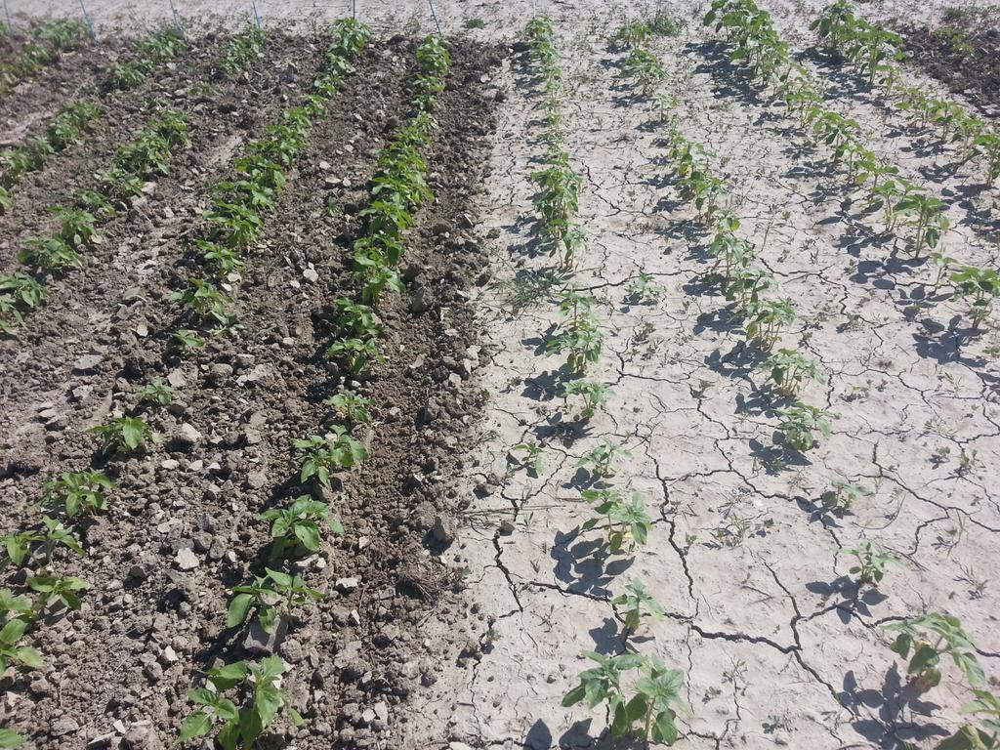
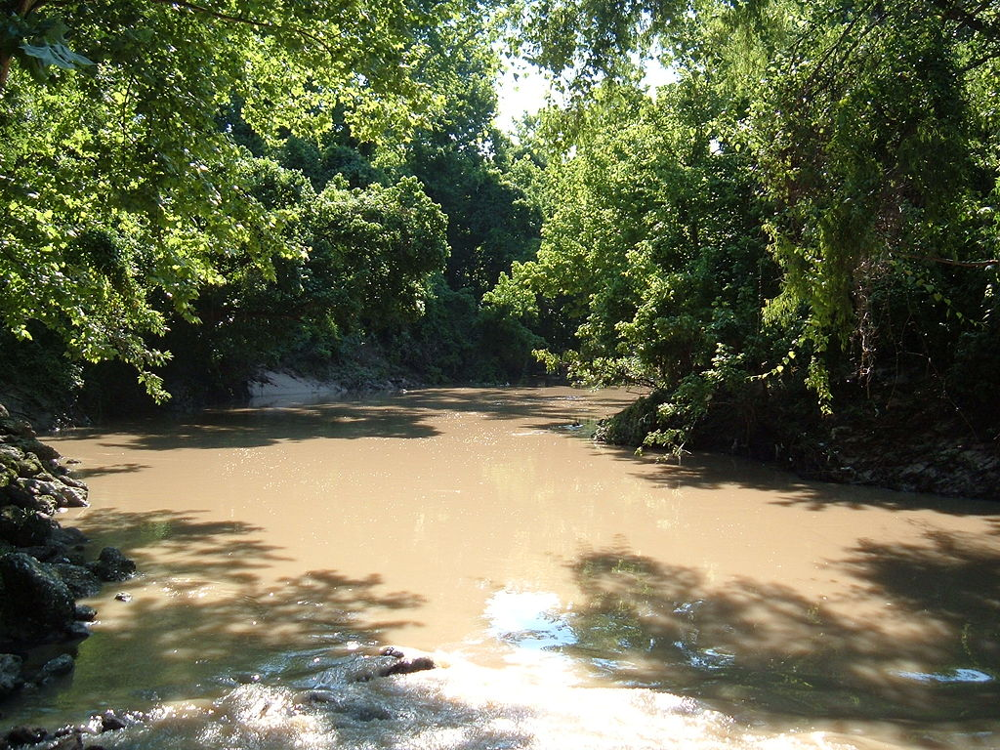
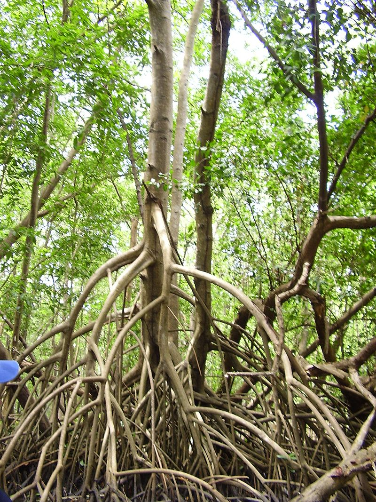
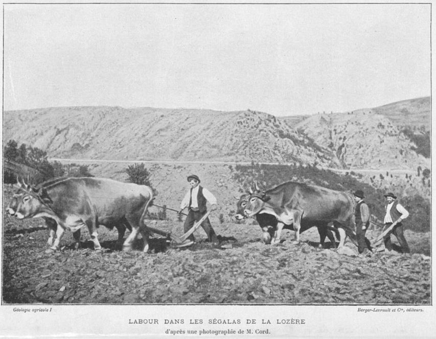

Retour
Page précédente
Page suivante
QCM : Les sols - Auto-évaluation
À l'interface entre lithosphère, atmosphère, hydrosphère et biosphère ?
1. Qu'est-ce qu'on appelle la
battance
?
A) La battance est le phénomène de mouvement, tantôt vers le haut, tantôt vers le bas, de la limite supérieure de la nappe phréatique superficielle dans un sol.
B) La battance désigne le retournement du sol par le labourage.
C) La battance est un phénomène affectant certains sols, qui ont tendance à former une croûte imperméable en surface, lorsqu'ils sont frappés par de fortes pluies.
D) La battance désigne l'aptitude d'un sol à supporter le poids et le roulement des engins agricoles.
Commentaire:
La battance est un processus de dégradation des sols qui se manifeste par la formation d'une croûte superficielle dure et compacte. Cette croûte, imperméable, résulte de l'impact des gouttes de pluie sur les particules du sol, principalement dans les sols limoneux ou sablo-limoneux.
2. Cette photo montre un champ de tournesol avec deux sols différents. La partie à gauche montre une bonne structure favorable à l'aération et au drainage, mais quel est le problème sur la partie à droite ?

×
A) La partie à droite montre une croûte de battance.
B) La partie à droite montre une croûte de tassement.
C) La partie à droite montre une croûte de dessèchement.
D) La partie à droite montre une croûte de battement.
Commentaire:
La partie à droite montre une croûte de battance. Les conséquences de la battance sont nombreuses :
Réduction de l'infiltration de l'eau:
L'eau de pluie ruisselle en surface plutôt que de pénétrer dans le sol, augmentant les risques d'érosion.
Difficulté de germination:
Les jeunes plantules ont du mal à percer cette croûte dure, ce qui peut entraîner des levées irrégulières et une réduction des rendements.
Limitation de l'aération du sol:
La croûte de battance réduit les échanges gazeux entre le sol et l'atmosphère, ce qui peut nuire au développement racinaire des plantes.
3. Quels sont les sols les plus concernés par la battance ?
A) Les sols pierreux.
B) Les sols sableux.
C) Les sols argileux.
D) Les sols limoneux.
Commentaire:
Les sols limoneux, composés de particules de taille moyenne, sont particulièrement sensibles à la formation de croûtes de battance pour plusieurs raisons :
Structure instable des agrégats:
Les agrégats de limon sont moins stables que ceux des sols argileux, ce qui les rend plus vulnérables à la dispersion par l'impact des gouttes de pluie.
Taille des particules:
Les particules de limon sont suffisamment fines pour colmater les pores du sol après avoir été dispersées, empêchant ainsi l'infiltration de l'eau et favorisant la formation d'une croûte imperméable.
4. Quels sont les problèmes posés par la battance ?
A) Cela engorge les sols en eau.
B) Cela empêche les racines de respirer.
C) Cela augmente le quantité d'eau ruisselant à la surface du sol.
D) Cela imperméabilise la surface du sol.
Commentaire:
La battance, c'est-à-dire la formation d'une croûte dure et compacte à la surface du sol, pose plusieurs problèmes majeurs pour l'agriculture et l'environnement :
Imperméabilisation du sol:
La croûte de battance empêche l'eau de pluie de pénétrer dans le sol. Elle agit comme une surface imperméable, limitant ainsi l'infiltration de l'eau.
Augmentation du ruissellement:
Lorsque l'eau ne peut pas s'infiltrer, elle ruisselle en surface, emportant avec elle des particules de sol et des nutriments. Cela entraîne une érosion des sols et une dégradation de leur fertilité.
Difficulté de germination:
Les jeunes plantules ont du mal à percer cette croûte dure pour émerger. Cela réduit le taux de germination et peut entraîner des levées irrégulières.
Limitation de l'aération du sol:
La croûte de battance réduit les échanges gazeux entre le sol et l'atmosphère. Les racines des plantes ont ainsi plus de difficulté à respirer, ce qui peut nuire à leur développement.
5. Quel effet ont les racines, en général, sur l'acidité du sols ?
A) Les racines tendent à augmenter le pH des sols, car elles libèrent des bases.
B) Les racines n'ont qu'une influence négligeable sur l'acidité du sol.
C) Les racines tendent à acidifier le sol, car elles libèrent des H
+
.
Commentaire:
Les racines des plantes, au cours de leur croissance et de leur activité métabolique, libèrent diverses substances dans le sol, dont des protons (H
+
). Ce phénomène contribue à l'acidification de la rhizosphère, la zone du sol directement en contact avec les racines.
Plusieurs mécanismes expliquent cette acidification :
Respiration racinaire:
La respiration des racines consomme de l'oxygène et libère du dioxyde de carbone (CO
2
). Ce CO
2
réagit avec l'eau du sol pour former de l'acide carbonique (H
2
CO
3
), qui se dissocie en ions hydrogénocarbonate (HCO
3
-
) et protons (H
+
).
Absorption sélective des cations:
Les racines absorbent préférentiellement certains cations (comme le potassium K
+
ou le calcium Ca
2+
) par rapport à des protons. Cette absorption sélective entraîne un enrichissement relatif en protons dans la solution du sol.
Excrétion d'acides organiques:
Certaines plantes excrètent des acides organiques (comme l'acide citrique ou l'acide malique) par leurs racines. Ces acides contribuent à acidifier le sol en libérant des protons.
6. Pourquoi les sols sont-ils acides dans des pays comme l'Alaska, la Sibérie, le Canada ou la Scandinavie ?
A) L'humidité importante des sols dans ces pays rend ces sols acides.
B) La décomposition de la litière fournit des acides, que les microbes n'ont pas le temps de traiter en raison de l'activité microbienne réduite.
C) Les retombées atmosphériques des polluants produits par les zones industrielles
D) L'ensoleillement réduit dans ces pays accroit l'acidité des sols.
Commentaire:
Dans les régions froides comme l'Alaska, la Sibérie, le Canada et la Scandinavie, l'acidité des sols est principalement due à la lenteur des processus de décomposition de la matière organique.
Voici les principales raisons :
Faible activité microbienne:
Les basses températures ralentissent considérablement l'activité des micro-organismes du sol. Ces derniers jouent un rôle crucial dans la décomposition de la matière organique et la minéralisation des éléments nutritifs. Lorsque leur activité est réduite, la matière organique s'accumule et se décompose lentement, libérant des acides organiques qui acidifient le sol.
Accumulation de litière:
La végétation, principalement composée de conifères dans ces régions, produit une litière acide. Cette litière s'accumule plus rapidement qu'elle ne se décompose, contribuant à l'acidification du sol.
Lessivage des bases:
Les précipitations, même faibles, peuvent lessiver les bases échangeables (calcium, magnésium, potassium) présentes dans le sol, accentuant ainsi son acidité.
7. Quel(s) effet(s) a l'acidité sur ces sols des pays froids (Scandinavie, Sibérie, Alaska, ...) ?
A) Cela hydrolyse les argiles.
B) Cela génère une hydrolyse intense des minéraux alumino-silicatés.
C) Cela réduit les Fe
3+
en Fe
2+
.
D) Cela solubilise les ions Al
3+
et Fe
3+
qui migrent en profondeur.
Commentaire:
L'acidité élevée des sols dans les régions froides a plusieurs conséquences sur la composition et la structure de ces sols. Parmi les effets les plus notables, on peut citer :
Solubilisation des métaux:
L'acidité favorise la solubilisation de certains métaux comme l'aluminium (Al
3+
) et le fer (Fe
3+
). Ces cations, en se déplaçant dans le profil du sol, peuvent atteindre des horizons plus profonds.
Hydrolyse des minéraux:
L'acidité accélère l'hydrolyse des minéraux, notamment des minéraux argileux. Cette hydrolyse entraîne une modification de la structure des argiles et une libération de cations comme l'aluminium.
Formation d'horizons particuliers:
L'accumulation d'oxydes de fer et d'aluminium dans les horizons inférieurs du profil peut conduire à la formation d'horizons particuliers, comme les spodosols, caractéristiques des régions froides.
8. Dans les podzols, que contient l'horizon "gris cendreux", noté
E
ou
A2
?
A) Des cendres issues de la combustion du bois.
B) Des particules de feldspaths.
C) Des particules de quartz.
D) Des particules d'argiles.
Commentaire:
L'horizon E d'un podzol, caractérisé par sa couleur claire et sa texture sableuse, est le résultat d'un intense lessivage. Cet horizon a subi une perte importante de ses constituants les plus solubles (matière organique, oxydes de fer et d'aluminium, argiles) par percolation de l'eau.
Quartz:
très résistant à l'altération: Le quartz est un minéral très résistant à l'altération chimique. Il n'est pas affecté par les processus d'altération qui entraînent la dissolution des autres minéraux.
Taille des particules:
Les particules de quartz sont généralement de taille plus importante que les particules d'argile ou de matière organique. Elles sont donc moins facilement transportées par l'eau de percolation.
En résumé, l'horizon E d'un podzol est essentiellement constitué de particules de quartz car ce minéral est le plus résistant aux processus d'altération et de lessivage qui affectent les autres constituants du sol.
Pourquoi les autres options sont incorrectes ?
Des particules d'argiles:
Les argiles sont des minéraux très sensibles à l'altération et au lessivage. Elles sont donc généralement lessivées de l'horizon E.
Des particules de feldspaths:
Les feldspaths sont des minéraux altérables qui se transforment en argiles au cours de l'altération. Ils sont donc rarement présents en quantité significative dans l'horizon E.
Des cendres issues de la combustion du bois:
Cette option est incorrecte car la formation de l'horizon E est un processus naturel lié à l'altération des roches et à la migration des éléments dans le sol.
9. Quelles sont les activités humaines qui contribuent à acidifier les sols ?
A) Les centrales nucléaires.
B) Le chaulage du sol.
C) L'épandage d'engrais à base de sulfates ou nitrates.
D) La combustion du charbon et des hydrocarbures issus du pétrole ou du gaz naturel.
Commentaire:
Les activités humaines contribuent significativement à l'acidification des sols, accélérant un processus naturel. Voici les principales causes anthropiques :
1. Les émissions industrielles et domestiques
Combustion de combustibles fossiles: La combustion du charbon, du pétrole et du gaz naturel libère dans l'atmosphère des oxydes de soufre (SOx) et des oxydes d'azote (NOx). Ces composés se combinent avec l'eau de pluie pour former des acides sulfurique et nitrique, qui sont ensuite déposés sur les sols lors des précipitations acides. Industries lourdes: Certaines industries, comme la métallurgie ou la chimie, émettent également des polluants acidifiants.
L'agriculture intensive
Engrais azotés: L'utilisation excessive d'engrais azotés peut entraîner une acidification des sols. L'azote ammoniacal contenu dans ces engrais est transformé en acide nitrique par les bactéries du sol.
Les transports
Les véhicules thermiques: Les émissions des véhicules thermiques (voitures, camions, etc.) contribuent à l'augmentation des concentrations d'oxydes d'azote dans l'atmosphère.
Pourquoi les autres options sont incorrectes ?
Les centrales nucléaires:
Les centrales nucléaires ne sont pas une source directe d'acidification des sols. Les émissions des centrales nucléaires sont principalement liées à la radioactivité et non à l'acidité.
Le chaulage du sol:
Au contraire, le chaulage est une technique utilisée pour corriger l'acidité des sols en apportant des matières alcalines (comme la chaux) qui neutralisent les acides.
10. Parmi ces éléments chimiques, lesquels sont prélevés par les plantes dans le sol ?
A) Le soufre.
B) Le phosphore.
C) Le calcium.
D) Le carbone.
E) Le magnésium.
F) Le potassium.
G) L'azote.
Commentaire:
Les plantes prélèvent dans le sol les éléments nutritifs essentiels à leur croissance, principalement sous forme de sels minéraux dissous dans l'eau du sol. Le carbone, en revanche, est assimilé via la photosynthèse à partir du dioxyde de carbone (CO₂) présent dans l'atmosphère.
11. Dans quel contexte trouve-t-on des sols pauvres ?
A) Sur les sols volcaniques.
B) Sur les sols reposant sur des substrats siliceux (grès, sables, quartzites, ...).
C) Sur les vieux sols allitisés sous climat tropical.
D) Sur les sols alluvionnaires.
Commentaire:
Les sols pauvres en éléments nutritifs sont souvent liés à un climat ou un substrat particulier. Les vieux sols allitisés sous climat tropical ont subi une intense lixiviation, entraînant une perte importante des éléments solubles. Les substrats siliceux, eux, fournissent peu de minéraux nutritifs pour les plantes. En revanche, les sols volcaniques et alluvionnaires sont souvent riches en nutriments, du fait de leur origine géologique ou de l'apport continu de matériaux fertiles.
12. Comment s'appellent les forêts marécageuse littorales, à eau salée et installées sur les côtes basses des régions ou dans les estuaires, sous climat tropical ou équatorial ?
×
A) Le bayou
B) La mangrove.
C) La jungle.
D) La ripisylve.
Commentaire:
La mangrove est un écosystème caractéristique des régions tropicales et équatoriales. Elle est constituée principalement d'arbres et d'arbustes adaptés à des conditions d'eau salée et de sol vaseux, comme les palétuviers. Cet environnement joue un rôle crucial dans la protection des côtes contre l'érosion et les tempêtes, tout en abritant une biodiversité riche.
13. Qu'est-ce qui différencie la mangrove du bayou ?

Le bayou
×
A) La mangrove est sous climat tropical, tandis que le bayou se développe sous climat tempéré.
B) Le bayou se caractérise par des eaux plus salées que dans la mangrove.
C) Aucune différence, le bayou n'est qu'un nom local donné à la mangrove en Louisiane.
D) La mangrove baigne dans de l'eau salée, tandis que le bayou baigne dans de l'eau douce.
Commentaire:
La mangrove est un écosystème côtier adapté aux eaux salées ou saumâtres, souvent sous climat tropical, avec des arbres tels que les palétuviers. Le bayou, quant à lui, est une zone marécageuse à eau douce, typiquement située dans le sud des États-Unis, avec une végétation différente.
14. Quel arbre constitue la principale espèce arborescente dans les mangroves ?

×
A) Le papayer.
B) Le manguier.
C) Le palmier.
D) Le palétuvier.
Commentaire:
Les palétuviers, adaptés aux conditions salines et aux sols instables des mangroves, jouent un rôle crucial dans la stabilisation des côtes et la protection contre l'érosion.
15. L'eau marécageuse salée des mangroves est très pauvre en dioxygène. Quelles adaptations ont développé différentes espèces de palétuviers face à cette situation ?
A) Captage du dioxygène au niveau des feuilles.
B) Un tissu ligneux spécial, appelé
aérenchyme
pour l'achemeniment du dioxygène aux racines.
C) Des branchies au niveau de ses racines sous l'eau.
D) Des racines aériennes permettant de prélever l'oxygène de l'atmosphère.
Commentaire:
Les palétuviers ont développé des racines aériennes, comme les pneumatophores ou les échasses, et des structures internes, comme l’aérenchyme, pour assurer l’apport d’oxygène malgré les conditions d’hypoxie dans les sols marécageux.
16. Les sols des mangroves sont très anoxiques. Quelles réactions chimiques se produisent dans ces conditions ?
A) La matière organique est oxydée.
B) Les sulfates apportées par l'eau de mer sont réduits en sulfures.
C) Le Fe
3+
des oxyhydroxydes ferriques sont réduits en ions Fe
2+
.
D) Les sulfures sont oxydées en sulfates.
Commentaire:
Dans les sols anoxiques des mangroves, les sulfates se transforment en sulfures sous l'effet de la réduction microbienne, tandis que les oxyhydroxydes ferriques sont réduits en ions ferreux, et la matière organique subit une oxydation partielle par des bactéries anaérobies.
17. Que se passe-t-il quand on assèche des sols de mangroves pour les mettre en culture ?
A) Les ions Fe
2+
sont oxydés en ions Fe
3+
pour donner des oxyhydroxydes ferriques.
B) Les sulfates acidifient le sol.
C) Les sulfures sont oxydées en sulfates.
D) Les alcalins (Na
+
, K
+
) sont oxydés.
Commentaire:
L'assèchement des sols de mangroves entraîne une oxydation des sulfures en sulfates, qui acidifient le sol. Parallèlement, le fer ferreux (Fe
2+
) est transformé en oxyhydroxydes ferriques, modifiant la chimie du sol.
18. Que veut dire la racine "cherno" dans le mot "chernozem" ?
A) gris clair
B) gris foncé
C) brun
D) noir
Commentaire:
La racine "cherno" du mot "chernozem" est d'origine slave et signifie "noir," en référence à la couleur sombre de ce type de sol riche en matière organique.
19. Les ségalas sont des régions naturelles dans le sud du Massif Central (Aveyron, Lozère, ...), qui doivent leur nom à la culture du seigle, une céréale réputée peu exigeante capable de pousser sur des sols pauvres. Quelle roche peut constituer le substrat de ces sols ?

×
A) Des limons éoliens (loess)
B) Des marnes et des marno-calcaires
C) Des alluvions sablo-limoneuses
D) Des roches acides (granites, gneiss)
Commentaire:
Les ségalas, souvent associés à des sols pauvres, sont principalement constitués de roches acides comme le granite et le gneiss. Ces types de substrats limitent la fertilité des sols, d'où la culture du seigle.
Corriger
Recommencer